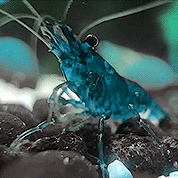
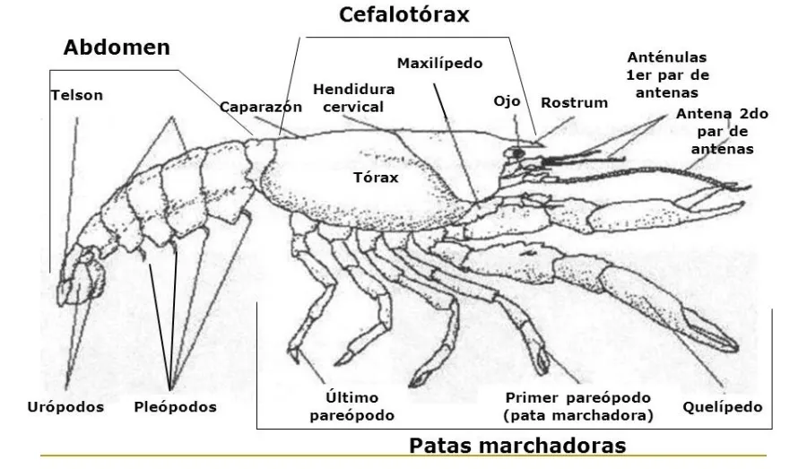
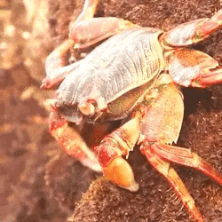
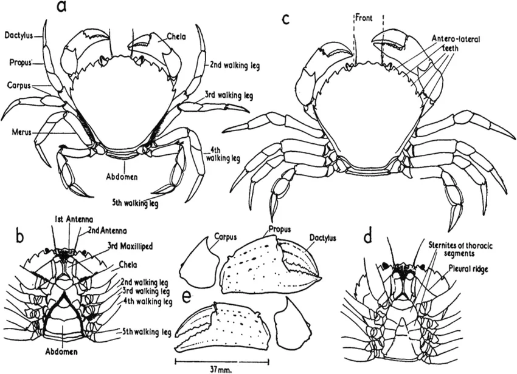
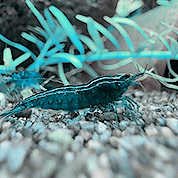

🠔 Mamíferos 𓆝 ----𓆞---- 𓆟 Moluscos ➔


Os crustáceos são animais invertebrados pertencentes ao grupo dos artrópodes. A maioria das espécies vive em ambientes aquáticos, principalmente nos oceanos, embora também existam crustáceos de água doce e algumas espécies terrestres.
Esses animais possuem o corpo protegido por um exoesqueleto, uma estrutura rígida que funciona como uma proteção externa. Como esse exoesqueleto não cresce junto com o animal, os crustáceos precisam trocá-lo durante o desenvolvimento, em um processo chamado muda ou ecdise.
Os crustáceos apresentam uma grande diversidade de formas e tamanhos. Entre os representantes mais conhecidos estão os caranguejos, camarões, lagostas, siris e cracas. Eles possuem grande importância para os ecossistemas aquáticos e fazem parte da alimentação de diversos animais.

Os crustáceos apresentam diversas características que permitem sua sobrevivência em diferentes ambientes. Muitas espécies possuem patas articuladas, antenas e estruturas especializadas para alimentação, defesa e locomoção.

Alguns dos crustáceos mais conhecidos incluem:
Curiosidade: o tatuzinho-de-jardim também é um crustáceo. Diferentemente da maioria dos representantes desse grupo, ele está adaptado à vida terrestre.

Os caranguejos são crustáceos encontrados principalmente em ambientes marinhos e costeiros, embora algumas espécies também possam viver em água doce ou em ambientes terrestres úmidos.
Uma das características mais conhecidas dos caranguejos é a presença de pinças, chamadas de quelas. Elas podem ser utilizadas para capturar e manipular alimentos, defender-se de predadores e disputar território.
O corpo dos caranguejos possui um exoesqueleto resistente e geralmente apresenta um cefalotórax largo. Eles possuem cinco pares de patas, sendo que o primeiro par normalmente apresenta as grandes pinças características desses animais.
A alimentação varia bastante entre as espécies. Existem caranguejos que se alimentam de algas, pequenos animais, restos de organismos e outros materiais encontrados no ambiente.

Exoesqueleto resistente: O corpo é protegido por uma estrutura rígida que oferece sustentação e proteção contra possíveis predadores.
Cinco pares de patas: Os caranguejos pertencem ao grupo dos decápodes e apresentam cinco pares de patas.
Pinças: O primeiro par de patas geralmente apresenta pinças utilizadas para alimentação, defesa e interação com outros animais.
Locomoção: Muitos caranguejos são conhecidos por se movimentarem lateralmente devido à estrutura e à posição de suas patas.
Respiração: Os caranguejos possuem brânquias. Algumas espécies conseguem permanecer fora da água por determinados períodos, desde que suas estruturas respiratórias permaneçam úmidas.
Alimentação: Dependendo da espécie, podem consumir algas, pequenos animais, moluscos e matéria orgânica.
Muda: Assim como outros crustáceos, os caranguejos precisam realizar a troca do exoesqueleto para conseguir crescer.
Alguns dos caranguejos mais conhecidos incluem:
Curiosidade: os caranguejos-eremitas possuem um abdômen relativamente mole e utilizam conchas vazias de outros animais para protegê-lo.
